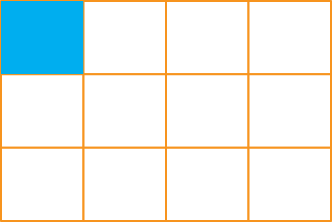

Mfano wa pili
Njia
Zidisha kiasi kwa kiasi na asili kwa asili:
Kwa hiyo,
Njia mbadala:
Kuzidisha kwa kutumia mstatili
Kuzidisha sehemu zenye asili tofauti kunaweza kufanyika kwa kutumia mstatili kama ifuatavyo.

Hatua
1.
Chora mistatili mitatu ya ulalo na mistatili minne ya wima katika mstatili mmoja.
2.
Weka kivuli
kwa wima na
kwa ulalo.
3.
Hesabu idadi ya miraba iliyotiwa kivuli mara mbili, unapata mraba mmoja ambao ni kiasi.
4.
Idadi ya miraba yote iliyo na kivuli na isiyo na kivuli ni 12, ambayo ni asili.
Kwa hiyo,